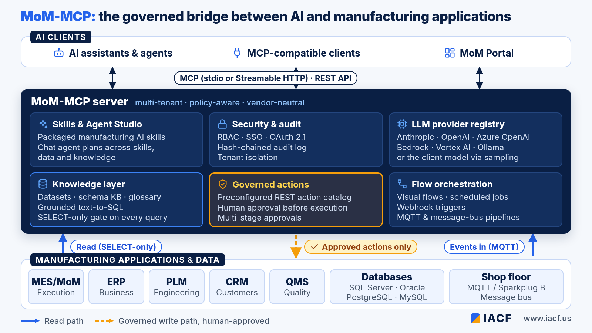
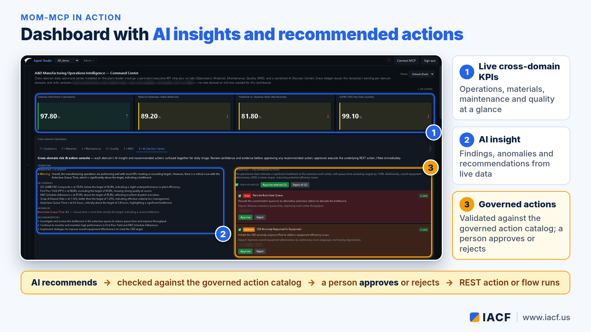
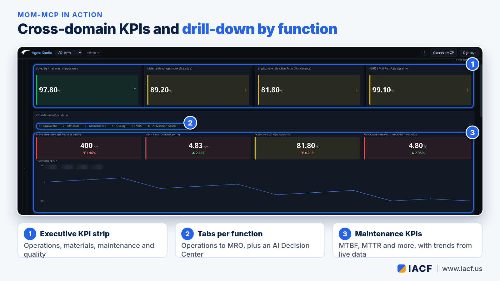
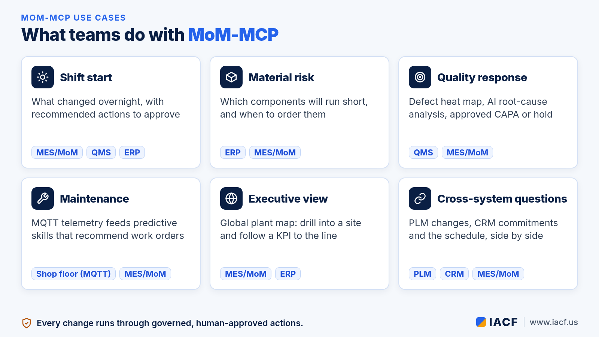

Introducing MoM-MCP: The Governed Bridge Between AI and Every Manufacturing Application
2026-10-08
Manufacturers want AI that does more than chat. They want it to read live production data, explain what is happening, and recommend what to do next. They also need it to respect the rules that keep a plant safe and compliant. MoM-MCP from IACF is built for exactly that gap. It is the bridge between AI and large language models (LLMs) on one side and the full landscape of manufacturing applications on the other: MES/MoM, ERP, PLM, CRM, QMS and the other systems a plant already runs.
This article is a complete introduction to MoM-MCP as it stands today: what it is, how it works, what it can do, the ways you can deploy it, and how to get started.
What MoM-MCP is
MoM-MCP is a multi-tenant, policy-aware server that speaks the Model Context Protocol (MCP), the open standard AI assistants and agents use to discover and call tools. Any MCP-compatible client, from a desktop AI assistant to a custom agent, can connect to it and immediately work with manufacturing knowledge: KPIs, datasets, business terminology, and governed actions. Behind that standard interface, MoM-MCP connects to the systems where manufacturing data and decisions actually live. Its connection model is vendor-neutral. A sample industry template shows a single tenant combining ERP, PLM, MES/MoM, CRM and program-management systems in one set of role-based dashboards, and data can also arrive from the shop floor through MQTT (including Sparkplug B) and message-bus pipelines. MoM-MCP also ships ready-made templates for DELMIA Apriso 2023 and 2025.The problem it solves
Most plants have plenty of data and plenty of applications. What they lack is a safe way to let AI use both. Connecting an LLM straight to a production database or to MES transactions raises hard questions. Who approved that change? Which data was the model allowed to see? What happens when it gets something wrong? At the same time, the questions people actually ask cut across systems. A late order may be a scheduling issue in MES, a material shortage in ERP, an engineering change in PLM and a customer commitment in CRM, all at once. Point solutions bolted onto one application cannot answer that. MoM-MCP gives AI one governed doorway into all of them.How it works

- Read through curated knowledge. MoM-MCP reads from many databases (SQL Server, Oracle, PostgreSQL, MySQL and more) through parameterized datasets, a curated schema knowledge base and a business glossary that maps plant terminology to the right tables and measures. Ad-hoc questions go through grounded text-to-SQL, and every query passes a read-only (SELECT-only) gate.
- Reason with skills. Skills package a manufacturing task (quality root-cause analysis, predictive maintenance, schedule optimization, shift handover and many more) as a prompt, bound data and a validated output shape. The model can be the server's own LLM or the connected client's model.
- Act only through governed actions. MoM-MCP never writes directly into the core tables of a manufacturing system. Every change goes through a catalog of preconfigured REST actions, and AI recommendations are validated against that catalog before a person can approve them.
- Keep people in the loop. Recommendations appear as action cards that users approve, reject or bulk-process, and multi-stage approval workflows can route a decision through several reviewers before anything executes.
Key capabilities
Dashboards and AI insight
- Role-based dashboards for plant managers, supervisors, planners, maintenance and quality teams, with drill-down, filters and multi-language UI.
- AI insight widgets grounded in the viewer's role, the dashboard context and current KPI values.
- A global map of plants with live KPIs, plus 2D shop-floor maps and 3D plant scenes with machine status.
- OEE (real-time, baseline and forecast), quality heat maps, materials-shortage prediction and production sequencing views.
- A sandboxed custom HTML widget for building operator consoles that can only reach the datasets and actions an author explicitly allows.


Agent Studio and chat
- A conversational agent that plans across skills, datasets, text-to-SQL and knowledge-base lookups, and can turn an answer into a draft dashboard or a recommended action.
- Chat history that persists per user, with tenant and user context applied automatically.
- LLM-generated static reports with embedded, governed Approve buttons.
Planning and orchestration
- A just-in-time sequencer whose constraints are written as plain-English rules, honored by both the deterministic and the AI-recommended sequence.
- A Gantt-style plan and schedule widget, the newest addition to the dashboard toolkit.
- A flow orchestration engine with a visual canvas, database and email steps, scheduled jobs and inbound REST (webhook) triggers.
Model choice
A configuration-driven provider registry supports Anthropic, OpenAI, Azure OpenAI, AWS Bedrock, Google Vertex AI, Ollama and other OpenAI-compatible endpoints. MoM-MCP can also run with no server-side model at all by borrowing the connected client's model through MCP sampling.Editions

- MoM-MCP (full). The complete design and runtime environment: admin UI, entity authoring and versioning, server-side AI, the built-in Agent Studio and observability.
- MoM-MCP Lite. A runtime edition for running packaged solutions. It keeps the same MCP server and REST API for datasets, connections, flows, pipelines and scheduled jobs, and it includes server-side LLM capability. What it leaves out is authoring: templates, datasets, dashboards, skills and authorization can't be created or configured on it. Instead, its configuration is imported from a packaged solution exported from the full MoM-MCP.
- MoM Portal. The end-user Agent Studio (dashboards, chat agent and reports) packaged as its own app. It talks to a MoM-MCP server over MCP and REST, reuses each user's own sign-in, and can use the server's LLM or its own.
Security, governance and licensing
- Tenant isolation, role-based access control and enterprise single sign-on (OIDC and Windows Integrated Authentication).
- OAuth 2.1 browser login for MCP clients, so nobody copies tokens by hand.
- Encrypted secret storage and per-action outbound authentication (API key, OAuth2, mTLS and more).
- A tamper-evident, hash-chained audit log of every tool call, plus an audit trail for AI-recommended actions.
- Versioned configuration with draft, prototype, active and archived states, and signed packages for moving tenants between environments.
- Offline, signed license keys bound to the deployment's domain or machine, with capabilities (dashboards, datasets, skills, actions, sequencing) enabled per license. Evaluation licenses are available.
Example use cases

- Shift start. A supervisor asks what changed overnight and gets a summary of downtime, quality alerts and at-risk orders, with recommended actions to approve.
- Material risk. Planners see which components will run short against planned orders, when to order them, and an AI view of expedite options drawn from ERP and MES data.
- Quality response. A quality engineer reviews a defect heat map, asks for root-cause analysis and approves a CAPA or quality hold through a governed action.
- Maintenance. Equipment telemetry arriving over MQTT feeds predictive-maintenance skills that recommend work orders for human review.
- Executive view. Leaders scan a global map of plants, drill into one site and follow a KPI down to the line.
- Cross-system questions. An engineering change in PLM, a customer commitment in CRM and the shop-floor schedule are viewed side by side instead of in three separate tools.